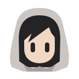
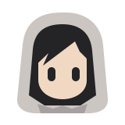
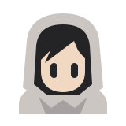
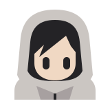
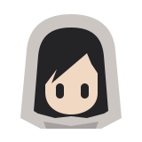
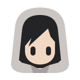

A1 · Folded hood
RekomendasiFokus kepala. Hood tapered + lipatan bawah jadi ciri, bukan lingkaran.
24 px32 px
Dyland
Enam konsep original: hood abu-abu, wajah hangat, rambut asimetris. Bentuk disederhanakan buat Dynamic Island—bukan salinan mascot produk lain.

Fokus kepala. Hood tapered + lipatan bawah jadi ciri, bukan lingkaran.

Sisi hood lebih tegak. Bentuk lebih geometris, wajah tetap terbuka.

Sedikit bahu + kerah terlipat. Lebih berasa teman kecil daripada logo.

Hood lebih lebar, bahu lebih jelas. Kesan hoodie kebesaran tanpa detail kecil.

Wajah lebih dalam, mata lebih rendah. Hood dominan, karakter lebih pemalu.

Kerah lebih tinggi dengan lipatan V. Siluet tenang, wajah sedikit tersembunyi.
Preview statis. Setiap SVG punya layer mata terpisah untuk animasi nanti. Klik gambar untuk buka aset vector asli. Mockup island bukan screenshot app.